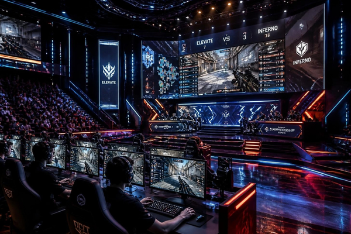
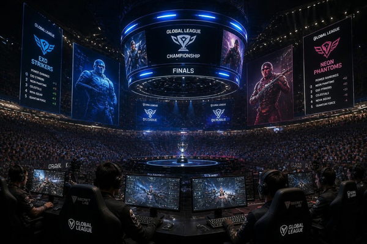

The origins of modern esports trace back to October 19, 1972, at Stanford University, where students competed in the "Intergalactic Spacewar! Olympics" for a year-long subscription to Rolling Stone. By the late 1970s and 1980s, video gaming shifted into public arcades as titles like Space Invaders, Pac-Man, and Donkey Kong introduced persistent leaderboards. Events like Atari’s 1980 Space Invaders Championship, which drew over 10,000 players across the United States, proved that video games were evolving from a solitary pastime into a major spectator sport.
The 1990s marked a pivotal hardware transformation as personal computers and local area networks (LANs) replaced arcade cabinets with head-to-head competition. Players hauled massive CRT monitors and PC towers to basements and ballrooms, connecting via Ethernet cables for multi-player Deathmatches. Landmark titles defined this era: Street Fighter II built the grassroots fighting game community, Quake pioneered fast-paced 3D first-person shooters, and StarCraft introduced high-speed real-time strategy that laid the foundations for professional gaming houses.
This period also established competitive gaming as a viable, high-stakes career path. The watershed moment came at the 1997 Red Annihilation Quake tournament, where over 2,000 entrants competed for id Software co-founder John Carmack’s personal 1987 Ferrari 328 GTS. When Dennis "Thresh" Fong won the sports car, it demonstrated to the world that digital dominance could yield tangible real-world rewards, leading directly to the establishment of formal leagues like the Cyberathlete Professional League (CPL).
Today, the spirit of retro esports thrives despite the industry's shift toward multimillion-dollar arenas and corporate sponsorships. The open-bracket culture of fighting game tournaments, high-score speedrunning events like Games Done Quick (GDQ), and active competitive scenes for legacy titles like Super Smash Bros. Melee and Street Fighter III: 3rd Strike keep these roots alive. Retro esports provided the crucial blueprint, community ethos, and competitive spirit that built today’s global digital sports industry.
Modern Esports

Over the past decade, electronic sports have transformed from niche underground LAN parties into a multi-billion-dollar global phenomenon. Modern esports now rival traditional sports in both audience scale and commercial influence, packing stadiums worldwide and drawing millions of concurrent viewers online. What began as passionate gamers competing for bragging rights has evolved into a highly structured ecosystem featuring franchised leagues, multimillion-dollar player contracts, and dedicated training facilities equipped with performance coaches, nutritionists, and sports psychologists.
A defining driver of this rapid maturation is the diversification of competitive titles and formats. While long-standing juggernauts like League of Legends, Counter-Strike, and Dota 2 maintain massive international fanbases, mobile esports have surged to dominate emerging markets across Asia, Latin America, and Southeast Asia. Titles like Mobile Legends: Bang Bang and PUBG Mobile have democratized high-stakes competition, proving that top-tier pro play no longer requires expensive high-end PC setups. This shift has expanded the talent pool globally and brought an entirely new demographic of fans into the competitive gaming fold.
The business model of modern esports is also undergoing a critical shift toward operational sustainability. Moving past an era driven largely by speculative venture capital, top organizations and tournament organizers are now prioritizing long-term profitability. Revenue streams have expanded beyond traditional brand sponsorships and media rights into digital in-game items, direct-to-consumer digital goods, and integrated creator networks. Publishers and teams are increasingly focused on year-round fan engagement, ensuring that viewership remains active between major international championships.
Looking ahead, technological innovation continues to reshape how competitive gaming is played and consumed. Advanced data analytics, real-time broadcast statistics, and artificial intelligence are transforming coaching strategies and viewer experiences alike. Meanwhile, cross-platform play and streaming integration are blurring the line between casual players, content creators, and professional athletes. As esports solidifies its footprint in mainstream culture, it stands not just as a simulation of traditional sports, but as the premier entertainment format for a digitally native generation.
The Future of Esports

The esports industry is rapidly evolving from a niche gaming subculture into a dominant force in global entertainment. As traditional broadcast models shift, streaming platforms, interactive media, and data-driven engagement are changing how audiences consume competitive gaming. With massive global viewership and an expanding fanbase among digital-native generations, esports is steadily cementing its place alongside legacy professional sports leagues in both scale and cultural impact.
Technology will drive the next wave of innovation within the industry. Advances in artificial intelligence, real-time analytics, and virtual or augmented reality promise to create hyper-immersive experiences for both players and fans. AI-driven coaching tools and match analysis are sharpening competitive standards, while interactive broadcast technology allows viewers to switch camera angles, access live player statistics, and participate in real-time predictions, transforming passive watching into an active, tailored experience.
Sustainability and commercial viability remain top priorities as the ecosystem matures. Organizations are moving away from speculative growth models toward diversified, sustainable revenue streams, including digital collectibles, in-game branded content, media rights, and regional franchise structures. Furthermore, as mainstream brands and non-endemic sponsors continue to invest heavily, esports infrastructure is becoming more localized, fostering robust regional collegiate circuits and youth academies that ensure a steady pipeline of talent.
Ultimately, the future of esports lies in its seamless integration with broader digital culture, web development, and lifestyle trends. The boundaries between gaming, music, fashion, and social media are blurring, positioning esports events as massive multi-platform cultural moments rather than simple sporting competitions. As accessibility improves and interactive technologies continue to develop, esports is well-positioned to redefine live entertainment for future generations.